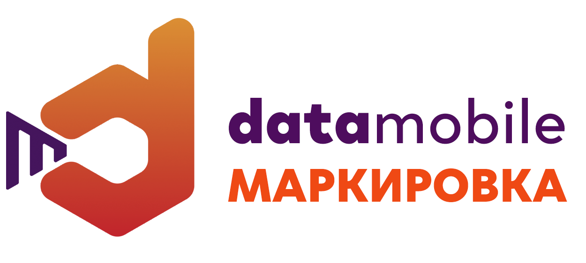
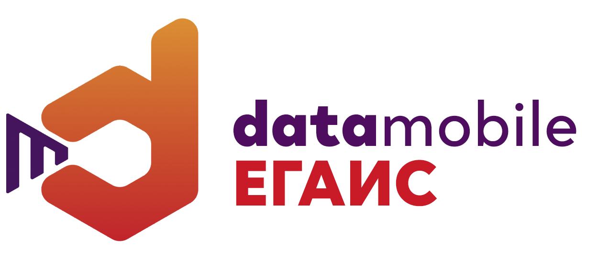
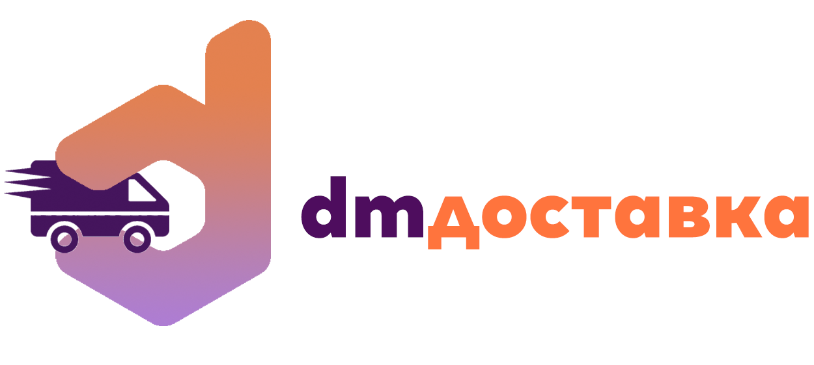
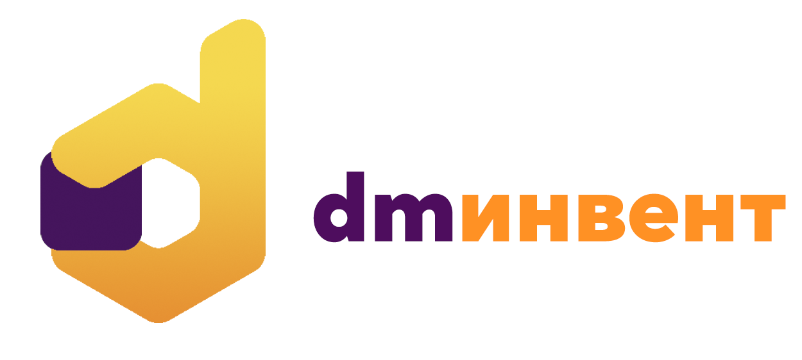
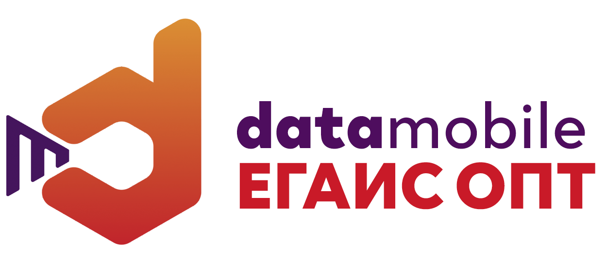

DataMobile Маркировка — это готовое решение для автоматизации учета маркируемой продукции. ПО является дополнительным программным модулем к продуктам DataMobile (Стандарт PRO, Online Lite или Online).
DataMobile Маркировка имеет специальные функции, необходимые для работы с товарами, входящими в перечень обязательной маркировки (табачная продукция, обувь, легкая промышленность, лекарственные препараты и т.д.). В этом программном продукте для мобильных устройств реализован уникальный механизм проверки и разбора КМ (кодов маркировки), а также работа с групповыми упаковками.
В результате, вы получаете комплексную автоматизацию всех складских и товароучетных процессов и возможность работать с товарами, подлежащими обязательной маркировке.
Модуль DataMobile Маркировка позволяет вести учет маркированной продукции, удобен для работы на складе и в торговом зале. Приобретая программный модуль DataMobile Маркировка, вы получаете необходимый инструмент для работы с маркированной продукцией, бесплатную техподдержку и обновления ПО в соответствии с требованиями законодательства и товарного рынка.
Функции модуля DataMobile Маркировка:
- Получение данных о товаре по сканированию КМ путем разбора входящей в него информации, в том числе получение МРЦ для табачной продукции;
- Проверка поступлений на основании документов с информацией из глобальной системы маркировки. Проверка соответствия указанных в документах приемки КМ фактически поступившим, поштучно или по групповым упаковкам;
- Формирование документов отгрузки, с возможностью указания в них КМ поштучно или по групповым упаковкам для передачи информации в глобальную систему маркировки;
- Работа с документами инвентаризации, списания и перемещения продукции для проверки и фиксации информации о товарах в разрезе КМ;
- Ввод в оборот КМ;
- Печать КМ на стационарном или мобильном принтере;
- Работа с групповыми упаковками КМ;
- Формирование собственных групповых упаковок КМ;
- Онлайн и оффлайн режим работы программы.
Розничная цена: от 15340 руб, подписка: 383 руб/мес.
Подробнее
Программное обеспечение серии DataMobile ЕГАИС — это готовые решения для автоматизации учета алкогольной продукции на складе и в магазине. Архитектура решений состоит из основного универсального программного продукта DataMobile версии Стандарт PRO, Online Lite или Online и модуля DataMobile ЕГАИС. Модуль ЕГАИС расширяет основную версию программы дополнительными функциями, необходимыми при подключении к ЕГАИС.
В DataMobile ЕГАИС реализован уникальный механизм проверки акцизных марок в фоновом режиме, независимо от действий оператора. При помарочном учете алкогольной продукции, не нужно ждать ответа на запрос проверки акцизной марки в ФСРАР после каждого сканирования. При приемке алкогольной продукции большими партиями, механизм ПО DataMobile ЕГАИС передает данные всех марок в товароучетную систему торгового предприятия, далее в фоновом режиме происходит проверка марок на серверах ФСРАР, по итогу которой, товаровед примет решение о принятии полностью или частично данной ТТН. Вся информация о проверке выводится в виде четкого визуально понятного отчета.
Модуль DataMobile ЕГАИС является дополнением к основным версиям DataMobile Стандарт PRO, Online Lite и Online. Вƒ результате, вы получаете комплексную автоматизацию всех складских и товароучетных процессов с возможностью работы с документами ЕГАИС в контуре одной программы.
DataMobile ЕГАИС позволяет вести помарочный учет алкоголя в ЕГАИС 3.0, удобен для работы на алкогольном складе и в торговом зале. В программе реализован автоматический обмен с ПО Frontol AlcoUnit, что позволит розничному магазину быстро и точно проводить проверку акцизных марок с данными балансового учета предприятия.
Функции модуля DataMobile ЕГАИС:
- Помарочная приемка алкогольной продукции на основании документа ЕГАИС ТТН 3.0
- Постановка на учет алкогольной продукции и формирование документа ЕГАИС 3.0, акт постановки на баланс
- Приемка по штрих-коду палетной упаковки
- Перемещение продукции по складу и торговому залу
- Отгрузка товара и формирование документов ЕГАИС 3.0 ТТН
- Списание алкогольной продукции и формирование документов ЕГАИС 3.0
- Проверка валидности акцизных марок в системе ФСРАР
- Онлайн работа программы
Розничная цена: от 15340 руб, подписка: 383 руб/мес.
Подробнее
DM.Доставка — программное обеспечение для автоматизации курьеров в соответствии с требованиями ФЗ-54. ПО поддерживает все необходимые функции для автоматизации службы доставки, удобно в использовании, совместимо с мобильными онлайн-кассами и банковскими терминалами.
Программное обеспечение DM.Доставка лицензируется на количество одновременных подключений (т.е. лицензия не привязана к конкретному устройству), что позволяет работать посменно или с привлечением временных сотрудников, без дополнительных затрат.
В ПО DM.Доставка реализована функция построения оптимального маршрута для курьера и расчета времени с учетом пробок. Задания курьеру распределяются по приоритетам и времени доставки, есть функция GPS-трекера курьеров (вы можете местоположение курьера на карте в режиме реального времени). ПО имеет дружелюбный интерфейс, доступны удобные функции: курьер может принять свободный заказ или отказаться от заказа (по аналогии с заказами такси), также есть возможность передать заказа другому курьеру (например, в случае поломки машины).
К программному продукту для курьеров можно приобрести в качестве дополнения ПО DM.Торговля программный продукт с торговым функционалом, с возможностью осуществлять допродажи товаров/аксессуаров на месте доставки.
Программное обеспечение DM.Доставка подходит для работы на любом Android устройстве версии 4.0 и выше (смартфон, планшет). Если же требуется снабдить мобильных сотрудников более защищенными устройствами, мы советуем рассмотреть вариант приобретения терминала сбора данных корпоративного класса
Основные функции DM.Доставка:
- Распределение заданий курьерам из системы
- Функция «Свободный» заказ для самостоятельного назначения курьера на него
- Фиксация средств курьера на начало смены
- Маршрут с учетом ситуации на дороге и отображение всех заказов на карте
- Сортировка заказов по приоритету или времени доставки
- Возможность совершить вызов прямо из приложения
- Возможность отмены позиций в заказе c внесением причины отказа клиента
- Выбор способа оплаты в том числе поддержка смешанной оплаты
- Поддержка документов типа «Поручение»
- Возможность передачи заказа другому пользователю или отказа от заказа
- Подсчет сдачи автоматически
- Печать чека в соответствии с ФЗ-54
- Информативный отчет для курьера за смену
- Возможность оформить возврат товара
- Наличие функции фотофиксации товара
- Перенос всех настроек приложения одним сканированием QR-code
- Поле «Менеджер» в заказе «Доставки»
- Вывод информации о подключенной ККТ
- Софт-клавиша сканирования
- Внесение/Изъятие наличных средств в ККМ
- Лицензирование на определенное количество подключений
- GPS-трекер курьеров
- Работа с безналичной оплатой через сервис «Pay-Me» или через банковские терминалы Ingenico ICMP, PAX D200, 2Can/iBox.
Розничная цена подписки: от 600 руб/мес (подписка на 1 мес).
Подробнее
DM.Invent – это специализированное программное обеспечение для инвентаризации основных фондов. ПО позволяет в кратчайшие сроки проводить инвентаризацию основных средств на предприятии. Инвентаризация основных средств имеет отличительные особенности в сравнении с инвентаризацией товаров (например, назначение материально ответственных лиц и мест расположения ОС), и данные параметры учтены в программном продукте DM.Invent .
В качестве оборудования можно использовать как мобильный терминал сбора данных, так и любое устройство на Android (телефон, планшет).
ПО DM.Invent может быть установлено на любое мобильное устройство с Android (версии 4.0 и выше). При использовании устройства без встроенного сканирующего модуля, можно подключить карманный сканер-штрихкода по USB или BlueTooth интерфейсу. ПО обладает дружелюбным интерфейсом и удобными функциями. Например, функция фотофиксации объекта учета позволяет не только указать причину списания товара, но также и зафиксировать это, прикрепив изображение
DM.Invent поддерживает работу по штрих-кодам, с его помощью можно проводить не только учет, но и маркировку основных средств. В ПО предусмотрено масштабирование продукта до версии RFID. Для этого потребуется дополнительный программный модуль RFID, с помощью которого можно добавить возможность подключения RFID-считывателя, и тогда инвентаризация может осуществляться на расстоянии, путем считывания радиочастотных меток с основных средств. В программном продукте реализован функционал поиска определенного ОС и записи метки в карточку ОС — это очень удобная опция как при инвентаризации на собственном предприятии, так и для использования программы в качестве инструмента для аутсорсинговых услуг.
Функции DM.Invent :
- Проведение инвентаризации основных средств
- Добавление фотографии ОС
- Списание брака с указанием причины из готового списка
- Назначение материально ответственного лица (МОЛ) и помещений/мест хранения
- Просмотр план-факта инвентаризации в реальном времени с цветовым обозначением активных позиций
- Создание и отправка на печать маркировочных этикеток при наличии мобильного принтера
Розничная цена: от 9400 руб.
Подробнее
Программное обеспечение DataMobile ЕГАИС ОПТ — это готовые решения для автоматизации учета алкогольной продукции на оптовом складе. Архитектура решений состоит из основного универсального программного продукта DataMobile версии Online Lite или Online и модуля DataMobile ЕГАИС ОПТ. Модуль ЕГАИС ОПТ расширяет основную версию программы дополнительными функциями, необходимыми для помарочного учета алкоголя с учетом специфики работы оптовых организаций.
Программа DataMobile не ограничена только работой с алкогольной продукцией и, если торговое предприятие также работает с не подакцизным товаром, то DataMobile позволяет проводить все товароучетные движения такого товара в едином контуре ПО. Предприятию не требуется покупка отдельных программ, переход из одной в другую при работе с различными видами товаров и т.д.
DataMobile имеет уже преднастроенные бизнес–процессы, которые легко изменить простыми настройками без программирования, а также добавить новые. Программа написана на современном языке программирования, что положительно влияет на скорость работы даже с огромными справочниками, имеет дружелюбный интерфейс, понятный пользователю.
Функции программного модуля ЕГАИС ОПТ:
-
Приемка алкоголя по входящим ТТН
Проверка осуществляется как помарочно, так и по иерархии упаковок, с возможностью выборочной проверки и принятия упаковки целиком без сканирования. -
Проверка легальности марок и отсутствия продаж по ним
Реализован уникальный механизм проверки марок прямо на ТСД, на сервере ФС РАР на любом устройстве, не только из списка из 5-ти сертифицированных ФС РАР ТСД. А также фоновая проверка всех ТТН. -
Отгрузка алкоголя по исходящим ТТН
По документу заказ покупателя, формирование реализации с заполнением серий и исходящей ТТН с заполнением марок и упаковок. -
Генерация и печать групповых упаковок (коробов и палет) по формату ФСРАР
Можно как на ТСД, так и в 1С сгенерировать и распечатать новую упаковку в соответствии с требованиями ФС РАР, все это записывается в отдельный регистр, для проверки уникальности. -
Агрегация алкогольной продукции
На ТСД можно выполнить агрегацию марок в коробки так и далее коробки в палеты. Все данные ставятся в 1С на регистры ч>хранения марок и упаковок. -
Постановка на баланс алкогольной продукции на регистр
Сканирование марок в документ постановки на баланс для отправки в ФС РАР данных об имеющейся алкогольной продукции у предприятия. -
Пересчет алкоголя
Пересчет алкоголя с заполнением необходимой информации. -
Списание
Выравнивания остатков в системе ЕГАИС, если есть расхождения товароучетной программой предприятия.
Розничная цена: от 33090 руб, подписка: 933 руб/мес.
ПодробнееDataMobile – это специализированное программное обеспечение для терминалов сбора данных и мобильных устройств. ПО предназначено для автоматизации складского учета, обладает широкими функциональными возможностями для работы на складе и в торговом зале. Универсальность продукта заключается в параметрических настройках любых бизнес-процессов предприятия.
DataMobile — ПО для ТСД на Win и Android с возможностью выбора версии. Программный комплекс легко масштабируется путем апгрейда с одной версии на последующую. Регулярные обновления ПО с расширением функционала текущей версии предоставляются бесплатно.
Для автоматизации ЕГАИС в рознице и на складе, в ПО DataMobile предусмотрен дополнительный модуль ЕГАИС, который можно приобрести отдельно и дополнить им версии Стандарт Pro, Online Lite и Online. Иными словами, сохраняя все стандартные складские и товароучетные функции программного продукта, добавляется возможность проверки акцизных марок и автоматизации помарочного учета в едином контуре программного комплекса.
Лицензия ПО DataMobile привязывается к ID мобильного устройства и передается в бессрочное пользование. Никакой абонентской платы, как за лицензию, так и за обновления — не предусмотрено. Программный продукт совместим с широким списком товароучетных систем, лицензия не имеет привязки к конкретной конфигурации. ПО DataMobile имеет открытые форматы обмена и может быть интегрировано в любую товароучетную систему.
Функции DataMobile:
- Инвентаризация товаров
- Приход, отпуск, перемещение товара
- Учет по серийным номерам
- Работа с упаковками и упаковочными листами
- Идентификация товара, функция прайсчекер
- Подбор заказа, торговля по образцам
- Мобильная переоценка и перемаркировка
- Печать этикеток и документов (в том числе и на сетевых принтерах)
- Борьба с очередями
- Выгрузка внешних заказов на кассовое ПО АТОЛ Frontol
- Адресное хранение (статическое и динамическое)
- Авторизация пользователей, логирование действий
- Редактирование шаблонов напрямую в терминале
- Звуковое сопровождение событий и сообщений
- Работа с онлайн-каталогом товаров Rate & Goods
- Работа с государственными системами (ЕГАИС, Маркировка, Меркурий)
Розничная цена: от 3410 руб, подписка: 133 руб/мес.
ПодробнееDM.Доставка — программное обеспечение для автоматизации курьеров в соответствии с требованиями ФЗ-54. ПО поддерживает все необходимые функции для автоматизации службы доставки, удобно в использовании, совместимо с мобильными онлайн-кассами и банковскими терминалами. Программное обеспечение значительно упрощает работу мобильных сотрудников, лицензируется на количество одновременных подключений (т.е.лицензия не привязана к конкретному устройству), что позволяет работать посменно или с привлечением временных сотрудников, без дополнительных затрат.
В ПО DM.Доставка реализована функция построения оптимального маршрута для курьера и расчета времени с учетом пробок. Задания курьеру распределяются по приоритетам и времени доставки, есть функция GPS-трекера курьеров (вы можете местоположение курьера на карте в режиме реального времени). ПО удобно в работе и имеет дружелюбный интерфейс, доступны удобные функции: курьер может принять свободный заказ или отказаться от заказа (по аналогии с заказами такси), также есть возможность передать заказа другому курьеру (например, в случае поломки машины или другой форсмажорной ситуации).
DM.Торговля — программное решение, предназначенное для мобильной автоматизации работы сотрудников, поддерживающее торговые операции подобно мобильному интернет-магазину (с возможностью осуществлять допродажи товаров/аксессуаров на месте доставки, располагать информацией об остатках и возможностью увидеть подробные описания товаров).
Для выездной торговли с соблюдением требований закона необходимо, чтобы у представителя предприятия была возможность правильно оформить документы расчета. ПО DM.Торговля позволяет распечатать чек нового образца, совершить обмен данными с ОФД, оформить все необходимые документы для клиента (в том числе при отказе от товара и возврате денежных средств).
Основные функции DM.Мобильная торговля.
-
Функции ПО для мобильного сотрудника службы доставки:
- Распределение заданий курьерам из системы
- Фиксация средств курьера на начало смены
- Маршрут с учетом ситуации на дороге и отображение всех заказов на карте
- Сортировка заказов по приоритету или времени доставки
- Возможность совершить вызов прямо из приложения
- mannligapotek.com
- Возможность отмены позиций в заказе c внесением причины отказа клиента
- Поддержка документов типа «Поручение»
- Возможность передачи заказа другому пользователю или отказа от заказа
- GPS-трекер курьеров
-
Функции ПО для быстрой аналитики:
- Информативный отчет для курьера за смену
- Аналитическая отчетность по работе каждого сотрудника
-
Функции ПО для оформления продажи у клиента в соответствии с ФЗ-54, с возможностью приема оплаты, печати чека, допродажи товара, корректировки заказа или возврата товара:
- Аналитическая отчетность по работе каждого сотрудника
- Возможность пересчитать стоимость заказа с учетом скидки клиента
- Автоматический подсчет сдачи для клиента
- Типы номенклатуры: «Товар» и «Услуга».
- Возможность печати копии чека
- Возможность оформить возврат товара
- Возвраты со смешанной оплатой
- Выбор платежной карты в возвратах
- Возможность задать иерархию по категориям товаров
- Возможность печати чека в соответствии с ФЗ-54
- Визуальное отображение товаров со скидкой
- Перенос всех настроек приложения одним сканированием QR-code
- Внесение/Изъятие наличных средств в ККМ
- Информативный отчет для мобильного сотрудника за смену
- Актуальные данные по ценам и остаткам
- Возможность прочитать полное описание о товаре, характеристиках и акциях
- Учет товаров и списание в режиме реального времени
- Работа с безналичной оплатой через сервис «Pay-Me» или через банковские терминалы Ingenico ICMP, PAX D200, 2Can/iBox.
Розничная цена подписки: от 720 руб/мес (подписка на 1 мес).
ПодробнееDM.Прайсчекер — специализированный программный продукт для информационных киосков. Программа позволяет идентифицировать товар по штрих-коду и вывести на экран информацию о нём, актуальную цену и изображение. Это надежное и простое решение, которое станет полезным в торговом зале магазина, повысит лояльность покупателей и увеличит средний чек. Интерфейс ПО позволяет дополнить описание товара подробной информацией и качественными иллюстрациями, вывести на экран информацию о действующих акциях и скидках.
Программа поставляется в виде дистрибутива для ПК и внешней обработки обмена для 1С. Совместима с устройствами на Linux и Android.
Розничная цена подписки: от 500 руб/мес (подписка на 1 мес).
ПодробнееDataMobile Конструктор — это расширение типового функционала программы под прикладные задачи. ПО является дополнительным программным модулем к продуктам DataMobile Стандарт PRO, Online Lite или Online (на ОС Android).
DataMobile Конструктор Модуль предназначен для ввода дополнительной информации о товарах после сканирования штрих-кода.
Примеры таких ситуаций:
- Указание срока годности или дата производства
- Выбор партии товара с привязкой к документу
- Указание причины списания товара
- Ввод размера упаковки
- Ввод цены
- И др.
Дополнительная информация, после загрузки в учетное решение, может быть обработана произвольным образом, например, срок годности будет записан в табличную часть документа, а для изменения цены будет создан новый документ на основании поступления.
Выбор дополнительных полей и правила обработки полученных результатов определяется для каждого шаблона отдельно.
Функции модуля DataMobile Конструктор:
- Создание и настройка дополнительных экранных форм для строк в документе
- Создание и настройка дополнительных экранных форм для шапки документа
Розничная цена: от 5000 руб.
Подробнее